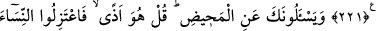

MÜŞRİK VE MÜ’MİNE
KADINLAR
221. Îmân etmedikçe putperest kadınlarla evlenmeyin. Beğenseniz bile, putperest
bir kadından, îmânlı bir câriye kesinlikle daha iyidir. İman etmedikçe putperest
erkekleri de (kızlarınızla) evlendirmeyin. Beğenseniz bile, putperest bir kişiden
inanmış bir köle kesinlikle daha iyidir. Onlar (müşrikler) cehenneme çağırır. Allah
ise, izni (ve yardımı) ile cennete ve mağfirete çağırır. Allah, düşünüp anlasınlar diye
âyetlerini insanlara açıklar.